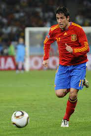

Alineación |
 |
|
BIOGRAFÍA Joan Capdevila Méndez es un exfutbolista español que se desempeñaba como lateral izquierdo. Fue campeón del mundo con la selección española en el an˜o 2010.Estadísticas en el Mundial 7 Partidos jugados6 Asistencias 36 Recuperaciones 5 Faltas Cometidas |
|
PORTERO |
|
LATERAL DERECHO |
|
CENTRAL DERECHO |
|
CENTRAL IZQUIERDO |